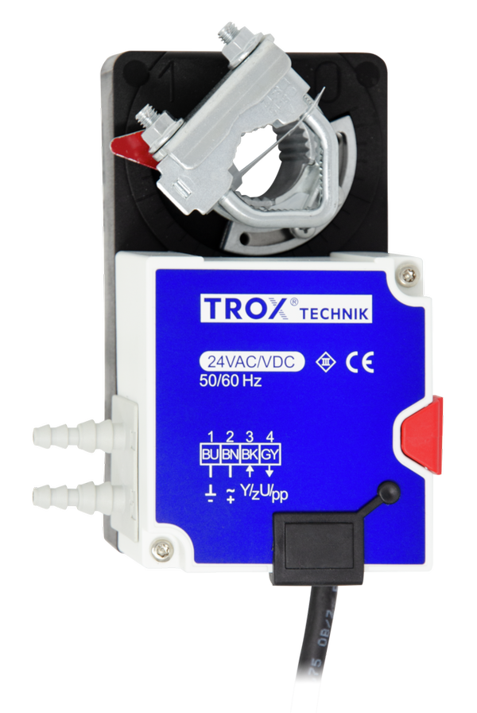

- Назначение
- Поддержание постоянного или переменного давления в воздуховоде.
- Диапазон
- 25–550 Па.
- Питание
- 24 В AC/DC.
- Сигналы
- 0–10 В / 2–10 В.
- Особенности
- Встроенный статический преобразователь давления; stand-alone или BMS.
TROX · DUCT PRESSURE
Компактный контроллер давления в воздуховоде для автономной работы или интеграции в BMS.
